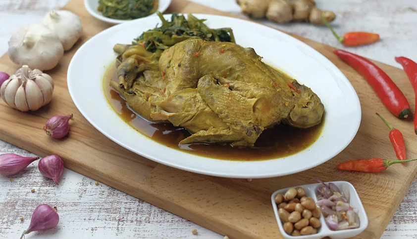
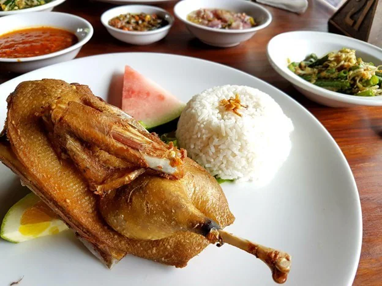
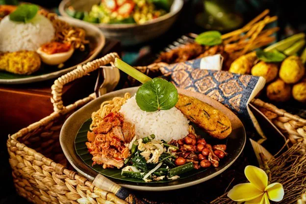

Ayam Betutu, asli dari Gilimanuk, Bali, adalah hidangan ayam yang dimasak dengan rempah-rempah pedas hingga teksturnya menjadi sangat empuk. Dengan popularitas makanan pedas yang meningkat, Ayam Betutu menawarkan peluang besar sebagai menu utama di restoran. Alternatifnya, Anda bisa menggunakan bebek untuk variasi yang lebih kaya rasa. Ada juga opsi untuk menambahkan kuah, yang bisa menambah dimensi baru pada hidangan ini di restoran Anda.

Ayam Betutu
Click Untuk Mengetahu Tentang Kuliner Ini!!

Bebek bengil
Click Untuk Mengetahu Tentang Kuliner Ini!!

Nasi Campuer Bali
Click Untuk Mengetahu Tentang Kuliner Ini!!

Tipat Contok
Click Untuk Mengetahu Tentang Kuliner Ini!!

Bulung Bunih Kuah Pindang
Click Untuk Mengetahu Tentang Kuliner Ini!!

Sate Plecing
Click Untuk Mengetahu Tentang Kuliner Ini!!